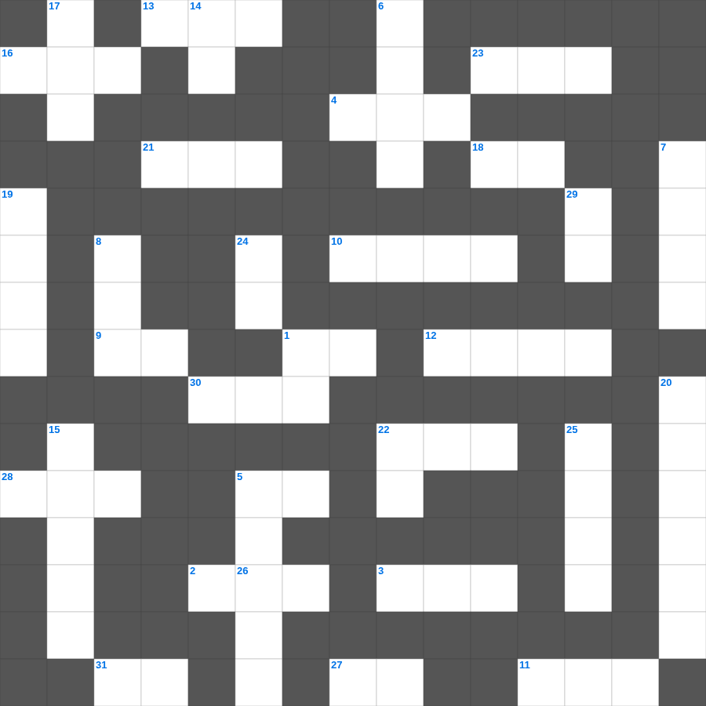

마가복음: 섬기러 오신 예수님
📌 서비스 정의
십자가로세로는 교회 주보와 주일학교에서 사용할 수 있는 성경 기반 가로세로 퍼즐 서비스입니다. 성경 인물, 사건, 핵심 구절을 바탕으로 제작되었습니다. 온라인 풀이 및 인쇄 기능을 제공합니다.
📖 마가복음란?
마가복음은 가장 짧고 속도감 있게 기록된 복음서로, 예수님을 고난받는 종이자 능력의 메시아로 강조하며 그분의 행동과 사역을 중심으로 전개됩니다.
📚 마가복음의 주요 사건·주제
예수님의 세례와 시험 · 여러 치유와 축귀 사역 · 변화산 사건 · 예루살렘 입성과 고난 · 십자가와 부활
오늘은 마가복음의 주요 내용을 담은 마가복음 가로세로 퀴즈를 준비했습니다. 총 35개의 힌트가 있으며, 주일학교 교재나 성경공부 자료로 활용하기 좋습니다. 무료로 즐기는 마가복음 가로세로 퍼즐을 지금 바로 풀어보세요!

📝 가로 힌트
1. 곡물로 드리는 제사
2. 물고기 배 속에서 회개한 선지자
3. 기생 라합이 창문에 매단 표식
4. 대제사장의 흉패에 박힌 열두 보석 중 하나
5. 요셉이 보디발의 아내 유혹을 물리치고 간 곳
9. 네 이웃에 대하여 거짓 이것하지 말라
10. 이스라엘의 수도이자 거룩한 성
11. 알곡과 이것의 비유
12. 하나님이 우리와 함께 계시다
13. 예수님이 십자가를 지고 오르신 언덕
16. 나아만 장군이 문둥병을 고친 강
18. 불뱀에 물린 자들이 이것을 보면 살았다
21. 가룟 유다가 예수님을 넘겨준 신호
22. 이스라엘이 광야에서 보낸 년수
23. 구름 기둥과 이것 기둥
26. 예수님이 예루살렘 입성 때 타신 것
27. 엘리야가 회오리바람을 타고 간 곳
28. 이스라엘의 유일한 여성 사사
30. 죄를 속하기 위해 드리는 제사
31. 지성소와 성소를 나누는 두꺼운 천
📝 세로 힌트
1. 곡식으로 드리는 제사
5. 노아가 보낸 비둘기가 물고 온 잎
6. 기뻐하라 내가 다시 말하노니 기뻐하라
6. 바울이 강가에서 루디아를 만난 성
7. 기름 부음 받은 자
8. 열두 해를 이것증으로 앓던 여인
14. 예수님이 십자가에서 돌아가신 사건
15. 엘리가 의자에서 넘어져 목이 부러져 죽은 이유
17. 나아만 장군이 씻은 강
19. 양의 뿔로 만든 나팔
20. 무화과나무가 마른 이유
22. 믿음 소망 사랑 중 제일은 이것
24. 사흘 만에 다시 살아나신 기적
25. 발람의 나귀가 말을 한 기적
29. 하나님의 이름을 이것되이 일컫지 말라
🧑🏫 교회 교육 자료 활용
이 퍼즐은 주일학교 교재 추천 자료로 활용할 수 있고, 주일학교 주보에 넣기 좋은 분량으로 구성되어 있습니다. 수업용 주일학교 교안에 활동지로 붙이거나, 예배 후 복습용 주일학교 공과교재로 바로 사용할 수 있습니다.
🏷️ 키워드
마가복음 가로세로 퀴즈, 마가복음, 십자가로세로, 성경퀴즈, 말씀퀴즈, 가로세로퍼즐, 주일학교 교재 추천, 주일학교 주보, 주일학교 교안, 주일학교 공과교재